Introduction
This report will attempt to take a brief overview of three tools that can be used in the field of I.T. forensics; those being packet sniffing utilities.The motivation behind packet sniffing is to assist in gaining intel in the area in which devices are operating in via the data that is being sent and received; this can also be referenced as a stage of reconnaissance. Many pieces of information can be gained from analyzing data being collected from devices in a network.
tcpdump
The next I.T. forensics tool we will be taking a deep, thorough look at is tcpdump; a packet sniffing tool primarily used on linux (but also available on windows via WinDump). This tool was created by The Tcpdump team and is available for free of charge thanks to the Berkeley Software Distribution license. A stark difference between the aforementioned pieces of software and tcpdump is that it is operated via the command line only. This may intimidate certain users (since many users enjoy the accessibility of a Graphic User Interface), but it is still vital to learn as there is many features this tool is capable of on Unix-like operating systems.
Let’s take a look at some of the useful components of the commands available with tcpdump. Firstly, it is important to know that these commands are run via the highest level of administrative access (super user). To utilize this tool, just type tcpdump followed by the flag you want. A generic line of output from this command will result in some or all of the following pieces of information; the time the packet was sent/received, a source and destination IP address (with port numbers) and certain flags (acknowledgement, window, length etc.).
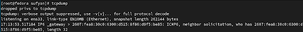To start, you can list all the interfaces that can be analyzed with the -D tag. After listing every interface that’s available for capture, one can be selected and a whole barrage of information for incoming and outgoing traffic will be generated; this will not stop until you press ctrl + x. To reduce this information, the -c (count) option can be used to specify how many packets should be captured in totality. Options that are common and important for filtering out packets include the host, src, dst, net, port, protocol name, ip6, port range and packet size via less, greater and the “<=” or “=>” operators. These options can be combined together using logical operators D(AND, OR and NOT). This is extremely useful to target traffic from a specific area. In the example below, https traffic is being targeted and, of course, the data is encrypted.
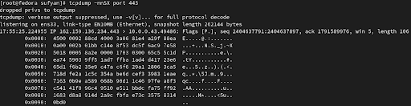There are many more options that are available to use, but what can be done after this information has been received? Well, tcpdump offers the ability to create Packet Capture (PCAP) files; this is for the purpose of saving what has been captured for documentation purposes. This can be accomplished by using the -w option (write to a file) and the opposing -r option for reading the file.
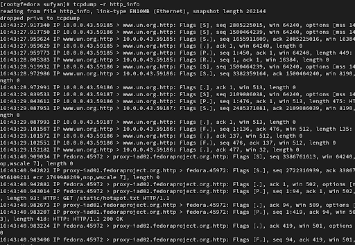Additionally, you can also view plain text of each packet by adding the -a option for easier readability.
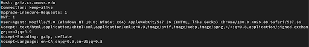In the screenshot above, the information on the host that was receiving or sending a http GET request. We can view useful information such as the User-Agent (which will let us know the user’s browser, operating system and other information). The following is an example of gaining information that is vulnerable due to the nature of the packet on the application layer (http).
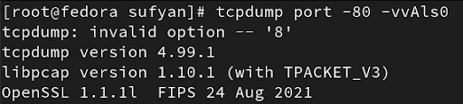Firstly, we are going to target port 80 on our machine since we know that http traffic is handled through that particular port by default. With regards to the options being used, we first have the ‘-v’ option; this will show more information (verbose) and more v’s (up to a maximum number of three) will show even more information. Next, we have the ‘-A’ option which will turn most of the packet information into ASCII code. This will make it much easier to interpret on the immediate output that is presented. Finally, we have the ‘-s’ option which will essentially change the snapshot size. The following screenshot shows information about vulnerable packet exchange:
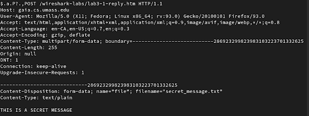We can see that the POST request has some very useful information. Aside from the user-agent and the host, we also have the plain-text that the user uploaded. This is why http is very dangerous for users to send information and packet sniffing can be used to gain this intel very easily in many situation that can occur.
Based on the information that has been provided, tcpdump is clearly a tool that can be used by a very advanced user for network packet sniffing.Overall, tcpdump is clearly a very versatile tool for forensics analysts who want advanced control options for the work they perform. Due to the lack of a GUI, it may seem quite daunting to a beginner, but the various options available (such as logical operators) make it a really good tool for experience individuals.
Wireshark
What is Wireshark you may ask? In order to have a solid base of understanding of Wireshark, understanding what a packet analyzer is first and foremost is important. In the case of Wireshark a network packet analyzer is being used and what that specifically is is a device that measures and examines what goes on inside the internals of a network cable. To go more in-depth an analogy would be just as an electrician would be required to use a device to measure a current inside of an electrical cable, Network Analyst requires tools and devices like WireShark. Tools and devices that allowed such capabilities were very expensive before and as time went on they became cheaper and more available to use, in the case of WireShark it is open source and free for anyone and everyone with the right device to use.
Moving on from what WireShark is we need to know where it can be useful and what is the purpose of having and using it. For starters, it is a very beneficial tool for Networking administrators who are usually bombarded with networking issues with end-users having trouble and them having the inability to distinguish between the cause and symptoms of network problems. This is where Wireshark shines, when an administrator analyzes incoming and outgoing traffic it allows him or her to distinguish where exactly the issue is happening, narrowing down the area of the problem far quicker than other approaches. Network analysts would have to know where the end-user is located and depending on that would traverse the different connections to further observe as shown below. There's a network indicator in the picture doing to the device being connected to the network with an ethernet connection.
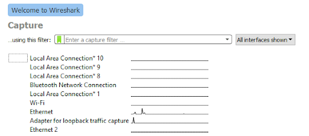That being said, Wireshark is primarily useful to those who are required to work with networks. This is where you can say the con of Wireshark is that it is not necessarily user-friendly or easy to use, it takes time to learn the tool and the learning curve is steep. The reason for this is not necessarily the tool itself but the user also needs to be well versed in understanding what each packet protocols such as TCP, UDP, ICMP, etc means and what uses they have. There is more unknown to new users than just protocols but learning protocols would be the tip of the iceberg.
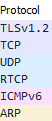But due to it being open-source and very popular there is lots of information regarding it available online for new users. The only other con may be the durations required when some tools are being used, on smaller networks it may not be an issue but on larger networks, it takes a toll on the tool.
Above stated the capabilities of WireShark but what features does it have which allow its functionality? WireShark can capture and save live packet data, and import packets from text files that have heavily detailed information on the packets that it captures, additionally allowing you to mitigate or select specific data types and create stats for many different criteria.
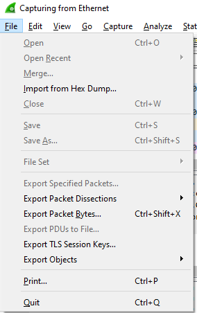 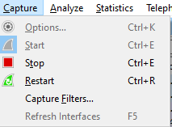
Once the setting of choice has been applied using the images above to show you the tabs whether it may be a live capture or an imported one, the filter tool removes any data typed you do not want to see. Below we have filtered TCP packets and this is one specific packet opened to analyze. The type of information that can be extracted from the following packet can be useful to Networkers. Information such as a source and destination address is tied to the packet. It will also give us information like length in bytes and the information of the contents of the packet but that varies depending on the type.

This takes us into the stream tool that Wireshark has, it would not be an understatement to say that it is one of the most powerful tools it comes along with. To allow a better understanding of what stream is and can do its best to think of it as a conversation. If there is lots of data being captured but our interests lie within a specific IP address we can use a stream to follow a TCP stream of information to see a conversation that is assumed to be private.
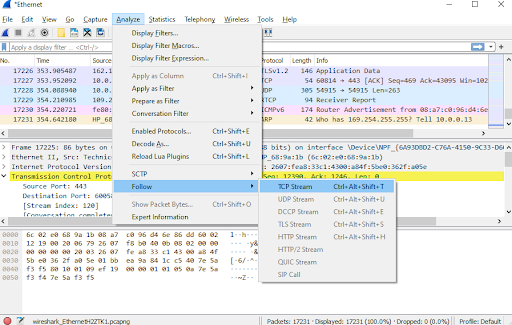Having such a wide range of tools makes Wireshark a top name in the network analyzer rankings, that being said it is not only limited to Windows, with the correct system requirements it can also be used on Mac OS, Unix, Linux, and BSD.
In conclusion Wireshark is a very helpful or dangerous tool depending on who and how it is decided to use. Once the initial learning curb has been overcome the amount of efficiency it brings for Networkers is as good as the person utilizing it.
NetworkMiner
The last tool we will be analyzing is called NetworkMiner; an open-source forensic analysis tool primarily used for windows but is compatible with other platforms such as Linux. This tool was first launched in 2007 by an independent software vendor known as Netresec which specializes in network security as they create tools to help with network forensics. NetworkMiner can be utilized in a passive manner in order to sniff information across the network depending on what the user desires such as hostname, open ports and more. NetworkMiner can also be utilized to parse various types of files such as PCAP, ETL, and PcapNG which will basically allow for a deeper analysis of captured information depending on the type of file. Alongside this NetworkMiner can be utilized in offline mode for analysis has the capabilities of reconstructing a whole conversation that has occurred over a network. This tool was built to be user-friendly meaning it had been simplified to the extent that analysis is very easy to understand for the average user and can really help speed the process when being utilized in dire situations. This was utilized by many incident response teams as well as law enforcement after it was launched which makes the user-friendly aspect even more important. NetworkMiner has both a free and paid version, paid version is mostly for larger organizations that require the use of more advanced features that the average user may not require when conducting their analysis. The professional version includes advanced features such as Geo Ip localization, DNS whitelisting, command-line scripting support and more.
We will be taking a further look into the free version offered by NetworkMiner as it includes most if not all of the network sniffing features as well as more. This tool can be downloaded off the Netresec website and upon opening up the tool the user will be introduced to the following:
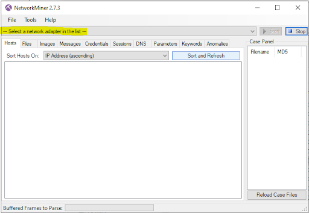This is the first form of contact a user will have with the tool and as you will be able to see the highlighted part in the picture is where one can start. As the text suggests in the box, the user can select a network adapter of their choice whether it is physical or wireless even, it can be selected from the drop-down menu, once the type of adapter is chosen the user can proceed to the next step. If the user proceeds with selecting their own network adapted they will have to allow NetworkMiner to pass the system firewalls as well as run this as root. The other option that is available for the user is that they can open an external file and import that into NetworkMiner to be analyzed.
As mentioned before there are certain types of files that can be imported into NetworkMinor such as PCAP files. PCAP files also known as packet capture files are exactly as the name suggests. When traffic is following through a network, packets are travelling in both directions and thus various methods can be utilized to capture the data across the network. One of the methods mentioned above is through tools such as NetworkMiner and Wireshark which uses WinPCAP to capture packets. Another method that can be used is known as a network TAP (test access point) which is basically a hardware device inserted at a certain point in the network to capture traffic. There exist more ways as well in order to capture packets aside from using a software or network TAP as these are the more convenient options. In simpler terms, this means capturing packets that are then stored in a file and be used to analyze the packets and information captured within the file across the network on tools like NetworkMiner.
I have inserted and old PCAP file in order to demonstrate some of the capabilities of NetworkMiner for educational purposes as you will be able to see below:
Once a file has been uploaded the above categories within the tool will start to populate and this will vary for each respective file that is being analyzed but all the relevant criteria that are shown in the picture will be populated based on the content of the file in order to be analyzed. The following list of the options available to sort the information that is uploaded by the file as the investigator can be looking for something very specific or just filtering it will make it a lot easier to analyze depending on the goal of the user.
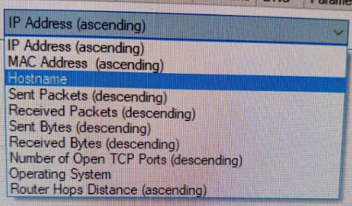In this specific scenario we see that we were able to pull information in regards to 361 different hosts and we can dive deeper into each specific host to analyze information only relevant to that host as shown below:
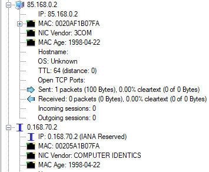We are able to snatch all the information shown above in regards to host 85.168.0.2 from its mac address to how many packets went in and out. For the next host, we were also able to pull the name attached to that host which can also be a very useful piece of information.
The next category is if we are able to catch any files which in this case we weren't as well as any jpeg or gif; these are image files that were also not present in this case. We were not able to receive any message either under the message category
The credential category is very important as this is where the user can find sensitive information in regards to hosts. As you may be able to see below we were able to snatch around 453 different sets of credentials all of which can be quite dangerous in the wrong hands. We are able to get the client, the server, the protocol being used, username and password as well as the timestamp. All of these pieces of information can be quite detrimental let alone having all of them altogether exposed in such a manner.
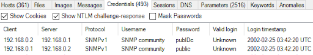This takes us into session which would show how many sessions are open and than DNS; showing how many dns requests were made.
The parameters sections show the requests that were being made alongside other sensitive information that can be utilized greatly when conducting a forensic analysis. For example, the parameter value can give key information in regards to certain parameters and if there are known weaknesses against that, these can be used against the user such as certain versions of windows that are old and easily exploitable. We can even take the example below of the website, now that we know it is that specific website we can further investigate the website depending on the intentions of the analysis. The parameters result can be viewed below:
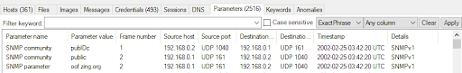Lastly, we can conduct keyword searches if required as data in these files can be quite large and utilizing this feature can help with easing the search, especially if one knows what they are looking for. The anomalies category will display all the errors that occurred while analyzing the file such as not being able to parse as well as information not being the same as shown below:
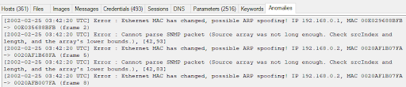This was only one feature that was briefly explained and we can now realize the capabilities of this tool by just being shown what it can do with PCAP files. NetworkMinor has numerous more features and uses depending on the purpose all of which are utilized in their own respective ways in order to conduct forensic analysis in the real world.